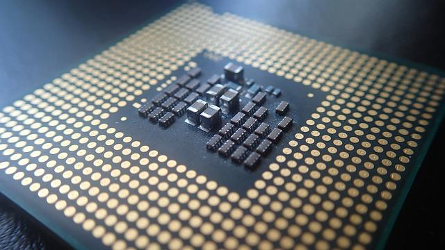
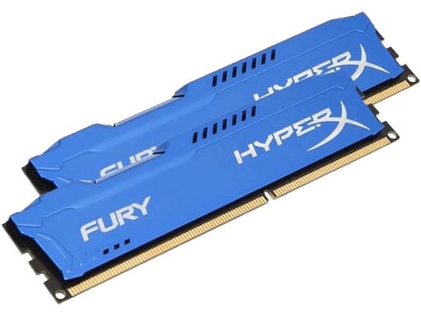

Hogyan érdemes fejleszteni a számítógépet? Melyik egységet érdemes kicserélni a jobb teljesítmény elérése érdekben? A kérdésre adott válaszhoz tekintsen úgy a számítógépére mint egy láncra, melynek erősségét annak leggyengébb láncszeme határozza meg. Ennek alapján mindig azt a részegységet érdemes cserélni/fejleszteni, ami leginkább visszafogja gépe teljesítményét.
Processzornak nevezzük azt az eszközt, amely végrehajtja a számítógépes programokat és vezérli a feldolgozási folyamatokat.
A processzor teljesítményét elsősorban az órajel határozza meg. A 2 GHz-es órajel azt jelenti, hogy a processzor 1 másodperc alatt 2 milliárd műveletet elvégzésére képes. Minél nagyobb az órajel, annál nagyobb a processzor teljesítménye. A processzor angol nevéből származó rövidítés a CPU.
Minden processzor tartalmaz adott számú
tipp A processzor cseréjével gyorsabbá tehetjük a programok futását, rövidül a számolási idő.
A memória a számítógép működéséhez szükséges programot és program futásához szükséges adatokat tárolja
Hagyományosan az elsődleges memória a processzor által aktívan használt, igen gyors elérésű memória, amelyet a futó programok használnak. Ide tartoznak a processzor regiszterei, a processzorban vagy azon kívül megvalósított gyorsítótárak és a számítógépben található operatív tár. Ezek leggyakrabban nem maradandó tárolók, tartalmukat a tápfeszültség megszűnésével elvesztik. Az operatív memóriát fő memóriának vagy központi memóriának is nevezik.
tipp A memóriamennyiség növelésével a programokon belül gyorsabb válaszidőket érhetünk el. A nagyméretű adatokkal történő munkavégzés (filmszerkesztés, játék) igényli a sok memóriát. Ma már egy Windows 10-es rendszer optimális futtatásához a 8GB memória ajánlott.
A háttértár olyan számítógépes hardverelem, mely nagymennyiségű adatot képes tárolni és azokat a számítógép kikapcsolása után is megőrzi.
Erre azért van szükség, mert a számítógép műveleti memóriájában csak ideiglenesen lehet adatot tárolni, ennek tartalma a számítógép kikapcsolása után törlődik. A tároló eszközök különböző (mechanikai, mágneses, elektronikus és optikai) elveken tárolják az adatokat. A háttértárak legfontosabb jellemzői:
Meghatározza, hogy mennyi adat helyezhető el rajta, pld. Blu-ray lemez 25GB, mai HDD-k néhány TB méretűek
Milyen sebességgel lehet írni és olvasni?
DVD-ROM 16X: kb.22MB/sec,
HDD:100-200MB/sec,
NVMe SSD : 2000-5000MB/sec
Mennyi idő múlva áll rendelkezésre az olvasás után a hivatkozott adat, pld. HDD:10-20ms, SSD kevesebb mint 0.2ms
tipp A rendszerfájlokat és programokat tartalmazó forgótányéros HDD helyett, használjunk NVMe SSD szilárdtest meghajtót. Nagyságrenddel nagyobb átviteli sebesség és villámgyors betöltés lesz a fejlesztés eredménye.
Több oldal található az Interneten, ahol sok évre visszamenően fellelhetők hardver eszközök specifikációi és azok sebességindexei.
| Eszközök tesztadatai | |
|---|---|
| Samsung 980 PRO 1TB NMVe SSD | 4358MB/sec |
| Kingston KF3733C19D4/16GX 16GB DDR4 RAM | 18.5GB/sec |
| Seagate Barracuda 3TB 7200rpm 3,5" HDD | 150MB/sec |
Forrás: Wikipédia